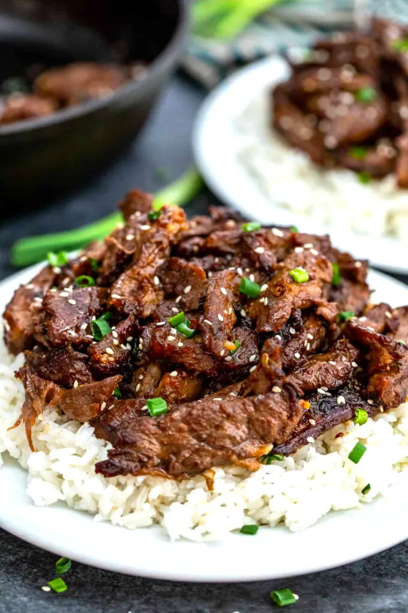

Beef Bulgogi Recipe

Description
Beef Bulgogi is smoky, juicy, slightly sweet, and melt-in-your-mouth tender. Made with the most flavorful marinade and thinly sliced meat in just 15 minutes. Eat this delicious Korean dish on its own, with hot white rice, or wrapped in fresh lettuce with kimchi!
Ingredients
- Meat: I mostly use flank steak and cut it into thin slices. However, you can use other cuts as well.
- Vegetable Oil
- Green Onions and Sesame Seeds: thinly sliced to garnish the dish.
Marinade Ingredients:
- Soy Sauce: go with a low-sodium version to control the saltiness.
- Rice Vinegar
- Light Brown Sugar
- Sesame Oil
- Freshly Minced Garlic and Ginger: both add plenty of flavors here. Therefore, feel free to use more of both if desired.
- Asian Pear
- Red Pepper Flakes
Steps
- Prepare the Meat. Partially freeze the meat. When ready, slice thinly across the grain.
- Marinate the Meat. Combine all the ingredients in a gallon Ziplock bag, then add the beef slices. Set aside for at least two hours.
- Cook. Next, heat a tablespoon of oil in a cast-iron skillet. Then, add one layer of beef. Let cook and char 2-3 minutes per side, then flip once. Repeat with the rest.
- Serve. Garnish with green onions, sprinkle with sesame seeds, and serve with rice.